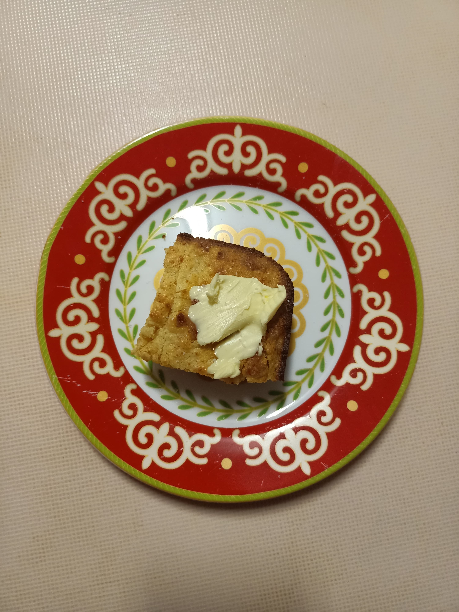

Cornbread - Small batch
 8 pieces
8 pieces-
 Lifestyle of a Foodie
Lifestyle of a Foodie
 Sweet
Sweet
 150 calories
150 calories
Lovely sweet honey flavour! Soak the polenta for a less gritty texture.

Preheat oven to 200C and prepare a loaf or slice tin.
1/2 cuppolenta1/2 cupplain flour1/4 tspbaking soda1/4 tspbaking powder- salt
55 gmelted butter3 tbspbrown sugar40 ghoney1 largeegg yolk1/2 cupgreek yoghurt
Stir together all of the ingredients with a wooden spoon. Don’t overmix!
If you didn’t soak your polenta, try mix wet and dry separately first.
Pour into the prepared tin, and bake for 25 minutes.
Let cool for 5 minutes before turning onto a wire cooling rack. Slice and serve!